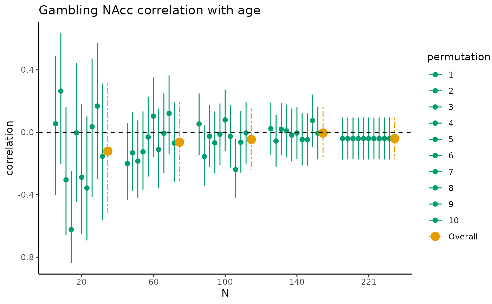
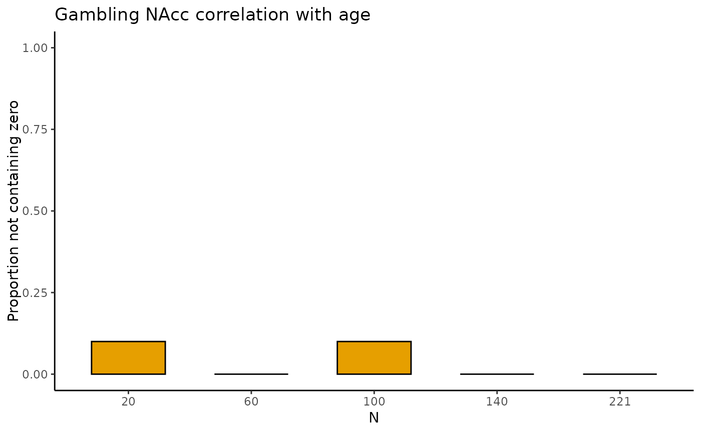

Estimate correlations
estim_corr.Rdestim_corr determines point estimate, SD and SE, 95% Credibility Intervals,
and interval width, for Pearson correlations for multiple sample sizes
Arguments
- data
Dataframe with the data to be analyzed
- vars_of_interest
Vector containing the names of the variables to be correlated:
c("var1", "var2")- sample_size
The range of sample size to be used:
min:max- k
The number of permutations to be used for each sample size. Defaults to
50- name
The title of the dataset or variables to be displayed with the figure. Defaults to
""
Value
tbl_selectreturns atibble::tibble()containing estimates of the Pearson’s correlation between two correlated variables with associated SD, SE, 95% CI, and width of the 95% CI (lower, upper) for five different sample sizes (starting with the minimum sample size, then 1/5th parts of the total dataset).fig_corrreturns a scatterplot where for the five different sample sizes, 10 out of the total number of HDCIs computed are displayed (in green). The average estimate with credible interval summarizing the total number of HDCIs for each sample size are plotted in orangefig_corr_nozeroreturns a barplot where for each of the five sample sizes the proportion of permutations not containing zero is displayedtbl_totalreturns atibble::tibble()containing estimates of the Pearson’s correlation between two correlated variables with associated SD, SE, 95% CI, and width of the 95% CI (lower, upper) for all sample sizes, including the permutation number.
Examples
data_gambling <- gambling
estim_corr(data_gambling,
c("lnacc_self_winvsloss", "age"), 20:221,
10, "Gambling NAcc correlation with age")
#> $tbl_select
#> # A tibble: 55 × 6
#> N correlation lower upper permutation nozero
#> <fct> <dbl> <dbl> <dbl> <fct> <dbl>
#> 1 20 0.126 -0.335 0.538 1 NA
#> 2 60 -0.0534 -0.303 0.203 1 NA
#> 3 100 -0.0465 -0.241 0.151 1 NA
#> 4 140 0.0412 -0.126 0.206 1 NA
#> 5 221 -0.0405 -0.172 0.0920 1 NA
#> 6 20 0.0193 -0.427 0.458 2 NA
#> 7 60 -0.138 -0.379 0.120 2 NA
#> 8 100 -0.0440 -0.238 0.154 2 NA
#> 9 140 -0.0820 -0.245 0.0850 2 NA
#> 10 221 -0.0405 -0.172 0.0920 2 NA
#> # ℹ 45 more rows
#>
#> $fig_corr

#>
#> $fig_corr_nozero

#>
#> $tbl_total
#> # A tibble: 2,020 × 5
#> N correlation lower upper permutation
#> <int> <dbl> <dbl> <dbl> <int>
#> 1 20 0.126 -0.335 0.538 1
#> 2 21 0.298 -0.154 0.646 1
#> 3 22 -0.103 -0.503 0.333 1
#> 4 23 -0.0401 -0.445 0.378 1
#> 5 24 0.390 -0.0163 0.685 1
#> 6 25 0.132 -0.278 0.501 1
#> 7 26 -0.0553 -0.433 0.339 1
#> 8 27 -0.148 -0.500 0.246 1
#> 9 28 -0.351 -0.640 0.0253 1
#> 10 29 -0.489 -0.725 -0.149 1
#> # ℹ 2,010 more rows
#>